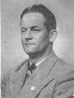
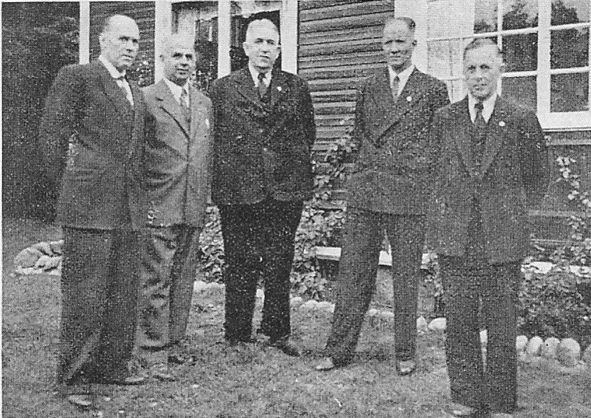

Introduction
The Norwegian Postal Chess Federation (NPSF) was founded in 1945 and quickly developed into one of Scandinavia's most active correspondence chess organizations. During its first decade the federation expanded rapidly and established both national and international activities.
Timeline
1945 – Foundation
NPSF was established and began publishing postal chess material.
1946 – John S. Syversen elected president
New leadership from Sarpsborg helped strengthen the federation.
1947 – Reorganization
Administrative reforms improved operations and tournament management.
1951 – Membership Growth
The federation reached new membership levels and increased its activities.
1954 – Sarpsborg Era
A largely Sarpsborg-based leadership assumed responsibility for the federation.
1956 – Consolidation
NPSF emerged as a mature national organization.
Image Gallery
NPSF Logo
Official emblem of the Norwegian Postal Chess Federation.

John S. Syversen
Long-time leader and one of the most important figures in the federation's early history.

NPSF Board 1951
Members of the federation's leadership in 1951. From left to right: Arnulf Elgesem, Johs. Agnalt, John S. Syversen, Ingebret Fosse and Sv. Kielland.
Legacy
The years 1945–1956 laid the foundation for organized correspondence chess in Norway and established traditions that continued for decades.